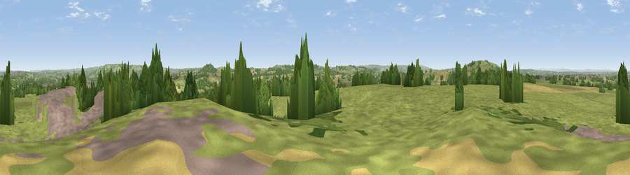

Viewpoint near Woollard
#14226 in England · top 23% of its area beats it · near WoollardThe view, rendered

A 360° render of this exact spot computed from the terrain model, tree cover and land cover — summer colours, afternoon light, calibrated against photographs of famous viewpoints. Real trees, hedges and buildings will differ in detail.
The panorama
Grey silhouette: terrain skyline in each direction (720 bearings, Earth curvature and refraction included). Dashed green: skyline with trees (+15 m) and buildings (+8 m) as obstacles. Blue strip: how far the ground is visible on each bearing.
Where the view opens
Wedge length = distance to the farthest visible ground on that bearing (vegetation-aware). Rings at 10, 25 and 50 km.
What fills the view
66% grassland · 19% woodland · 8% cropland · 7% built-up
Angular shares of the visible panorama (visual magnitude), not map area. Landscape diversity 0.43 (0–1 Shannon).
Key numbers
More beautiful places nearby
The staircase of upgrades: each row has a higher view potential than everything closer. Driving times are estimates from straight-line distance, calibrated against real road routing — check an actual route before setting out.
| Place | Direction | Drive | Score |
|---|---|---|---|
| Maes Knoll | W · 3 km | ~8 min | 69.9 |
| Viewpoint near Norton Malreward | W · 4 km | ~9 min | 72.9 |
| Viewpoint near Kelston | E · 8 km | ~15 min | 74.2 |
| Viewpoint near North Stoke | ENE · 8 km | ~16 min | 75.4 |
| Hanging Hill | ENE · 9 km | ~18 min | 76.4 |
| Beacon Batch | WSW · 17 km | ~30 min | 79.4 |
| Bleadon Hill [Loxton Hill] | WSW · 28 km | ~45 min | 79.6 |
| Viewpoint near Stinchcombe | NNE · 34 km | ~52 min | 80.5 |
51.38983, -2.52631 · source: screening · position refined by local search. Computed location — check access rights before visiting.